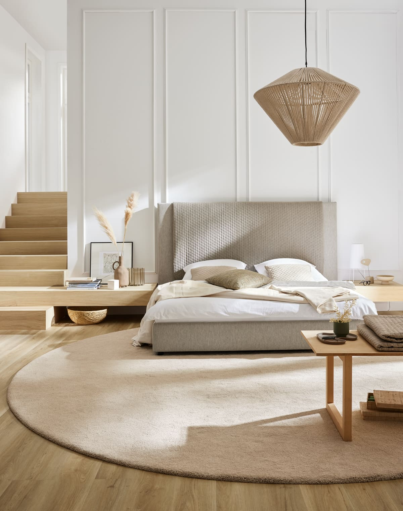
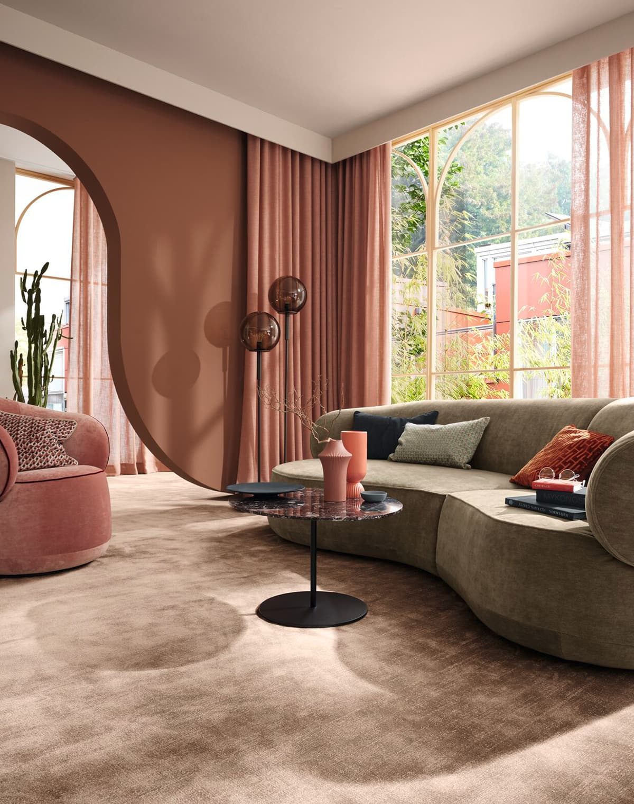
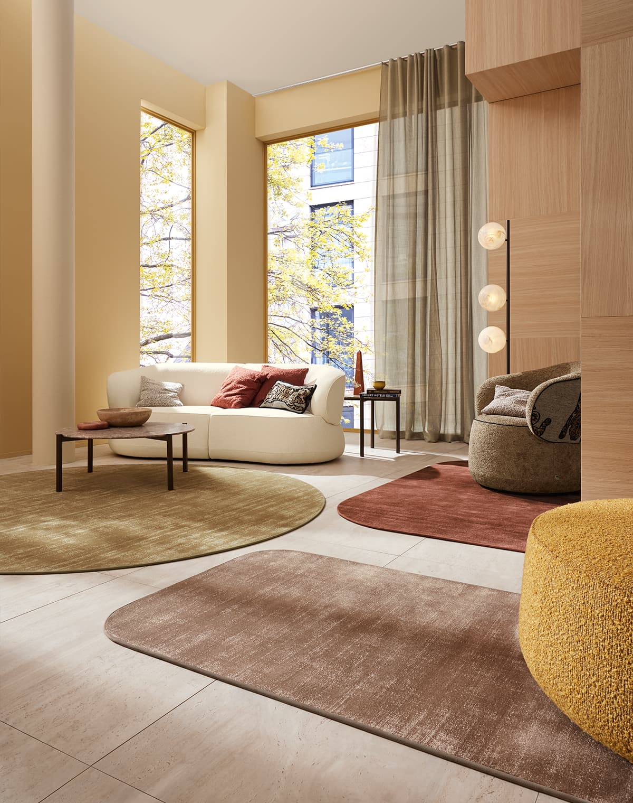

Vi erbjuder det bästa för varje rum och stil.
Mattor skapar värme, komfort och personlighet i hemmet. Oavsett om du söker en klassisk heltäckingsmatta som täcker hela golvet eller en designad avpassad matta som skapar fokus i ett rum, hittar du det hos oss. Vi arbetar med ledande märken som Ogeborg, JAB, Golvabia, Kjellbergs, Polytuft, Morris & Co och Designers Guild för att erbjuda både klassiska och moderna alternativ.

En heltäckingsmatta täcker hela golvet från vägg till vägg och skapar en varm, sammanhängande känsla i ett rum. Detta är ett klassiskt val för vardagsrum, sovrum och hall. Vi erbjuder ett brett urval av material — från robust nylon och polypropylen för högtrafikerade ytor, till lugnare ullmattor som andas naturligt. Heltäckningsmattor finns i tusentals kulörer och mönster, från neutrala toner som underbygger interiören till djärva färger som blir ett designelement.

En avpassad matta placeras strategiskt i ett rum för att skapa en fokuszon, definierat sittområde eller för att tillföra färg och mönster. Avpassade mattor är perfekta när du vill ha större flexibilitet i din inredning. Från klassiska orientaliska mönster till samtida geometriska och abstrakta designs — en välvald matta kan transformera ett helt rum. Vi hjälper dig att välja rätt storlek, material och stil för ditt utrymme.

Valet av mattmaterial påverkar både hur rummet känns och hur lätt mattan är att underhålla. Naturliga fibrer som ull och sisal är tidlösa och ökar värden på ett hem, men kräver regelbunden vård. Syntetiska material som polyester och nylon är slitstarka, ofta billigare och lättare att rengöra. Vi guidar dig genom fördelar och nackdelar med varje material så att du gör rätt val för din livsstil.
Olika rum har olika behov. I vardagsrummet kan en stor, mjuk matta skapa ett inbjudande samlingsplats. Sovrumsmattor bör vara bekväma och lugna till färgen. I köket eller entréen behövs ofta mer praktiska och slitstarka material. Vi hjälper dig att välja rätt matta för varje miljö, från badrummet till hemmakontoret.
Med hundratals mattkollektioner kan det vara svårt att välja. Vår erfarna personal hjälper dig att navigera bland material, färger och storlekar. Vi kan även visa hur en matta passar in i ditt hem innan du köper.
Besök oss i butiken